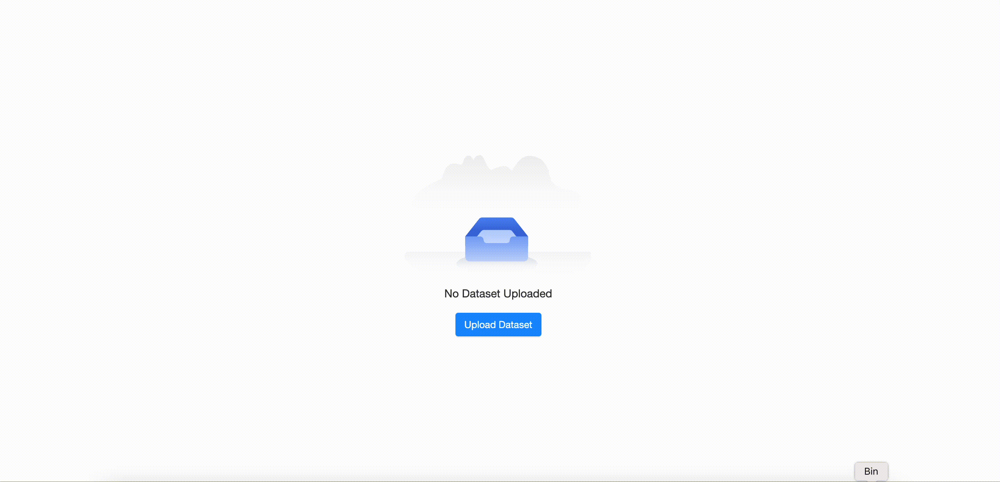

Empty state components for Shiny.

Empty states are situations where there is no data to display to the user. A good example is an empty shopping cart on an e-commerce site.
In the context of dashboards you can encounter empty states when:
- Before displaying any charts a user needs to upload a file containing the required data
- Users apply different filters to a dataset and there is no row matching the configured filters

The goal of this package is to make it easy to handle empty states in your shiny applications.
How to install?
remotes::install_github("Appsilon/shiny.emptystate")How to use it?
To start using shiny.emptystate, you need to:
- Include
use_empty_state()in your UI definition - Define the content you want to display as an empty state (e.g. a message)
- Create an instance of the
EmptyStateManagerclass where you define by theidwhich element of your app should be covered with the empty state content - Use its
showandhidemethods to show or hide the empty state content depending on your custom logic (e.g.nrow(data_to_display) > 0)
library(shiny)
library(shiny.emptystate)
library(reactable)
ui <- fluidPage(
use_empty_state(),
actionButton("show", "Show empty state!"),
actionButton("hide", "Hide empty state!"),
reactableOutput("my_table")
)
server <- function(input, output, session) {
empty_state_content <- div(
"This is example empty state content"
)
empty_state_manager <- EmptyStateManager$new(
id = "my_table",
html_content = empty_state_content
)
observeEvent(input$show, {
empty_state_manager$show()
})
observeEvent(input$hide, {
empty_state_manager$hide()
})
output$my_table <- reactable::renderReactable({
reactable(iris)
})
}
shinyApp(ui, server)How to contribute?
If you want to contribute to this project please submit a regular PR, once you’re done with new feature or bug fix.
Reporting a bug is also helpful - please use GitHub issues and describe your problem as detailed as possible.
Appsilon

Appsilon is a Full Service Certified Posit Partner. Learn more at appsilon.com.
Get in touch opensource@appsilon.com
Visit shiny.tools to learn about our Open Source.